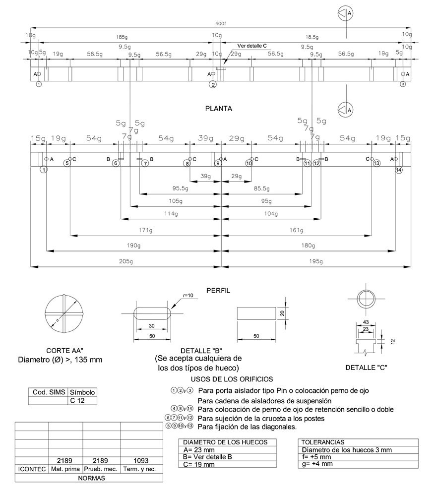
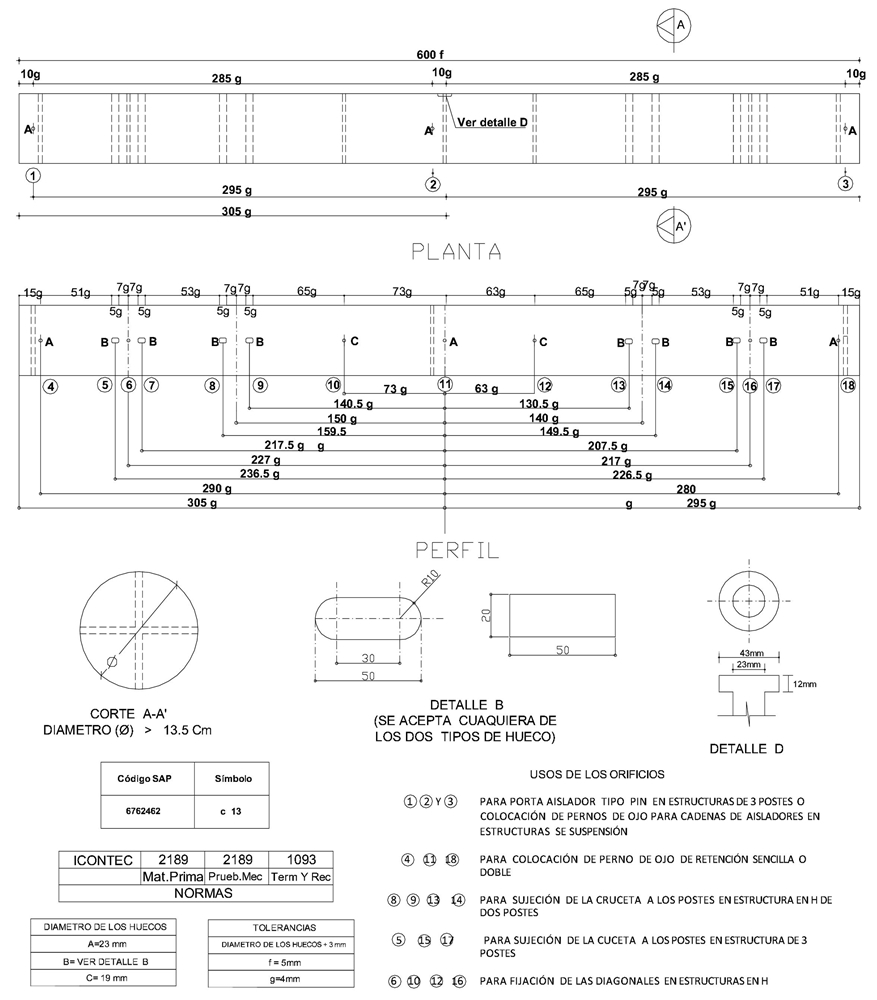

Siempre es más fácil conocer las normas ENEL-CODENSA
Rolex Rolex gold watch, compared with ordinary materials, gold watches are often expensive, but the replica rolex gold watch has the role of swiss replica watches hedging, so that it often becomes the first choice for collectors. The gold watch has value in the world, largely because the omega replica watch brand launched a commemorative limited edition watch or a replica hublot complex movement process or artistic attainments deep watches, mostly preferred gold precious metals such material. These watches tend to have a strong hedging function, therefore, Rolex Rolex gold watch reputation.

ET402 Crucetas de madera rolliza y limatón
Datos adicionales
Número de especificación
ET 402
Fecha de vigencia
09/07/2019
Herramientas adicionales
- Contenido Ocultar
- 1.0 OBJETO
- 2.0 ALCANCE
- 3.0 CONDICIONES DE SERVICIO
- 4.0 DEFINICIONES
- 5.0 SISTEMA DE UNIDADES
- 6.0 NORMAS DE FABRICACIÓN Y PRUEBAS
- 7.0 REQUERIMIENTOS TÉCNICOS PARTICULARES
- 7.1 VELOCIDAD DE CRECIMIENTO
- 7.2 QUÍMICOS
- 7.3 GEOMÉTRICOS
- 8.0 CRITERIOS DE ACEPTACIÓN O RECHAZO
- 8.1 MUESTREO
- 8.2 ACEPTACIÓN O RECHAZO
- 9.0 PRUEBAS DE RECEPCIÓN
- 9.1 PRUEBA DIMENSIONAL
- 9.2 INSPECCIÓN VISUAL
- 9.3 ANÁLISIS QUÍMICO
- 9.4 PRUEBAS MECÁNICAS
- 10.0 REQUISITOS AMBIENTALES
- 11.0 REQUISITOS DE LAS OFERTAS
1.0 OBJETO
Esta especificación técnica tiene por objeto establecer las características y requisitos técnicos que deben cumplir y los ensayos a los cuales deben ser sometidos las crucetas de madera rolliza y limatón que se emplean para sostener líneas aéreas y equipos de protección destinadas a la conducción de energía eléctrica y a los cuales se dará tratamiento preservativo como lo específica este documento.2.0 ALCANCE
Esta especificación técnica se aplicará en todas las crucetas de madera rolliza y limatón que adquiera CODENSA S.A. ESP.3.0 CONDICIONES DE SERVICIO
Las crucetas de madera rolliza y limatón que se emplean para sostener líneas aéreas destinadas a la conducción de energía eléctrica son elementos mecánicos de madera que trabajan a tracción, flexión y compresión, cuya única función es suspender el cable en las líneas aéreas, estos elementos serán empleados a la intemperie, siendo ésta generalmente en climas que van desde el cálido al frío y desde el húmedo hasta el cálido.Las crucetas de madera rolliza y limatón son usadas para la fijación de los diferentes elementos utilizados en los sistemas de distribución rural.
El ambiente donde serán instaladas las crucetas de madera podrá tener las siguientes características:
| CARACTERÍSTICAS AMBIENTALES | |
| a. Altura sobre el nivel del mar | Desde 2900 a los 600 m.s.n.m. |
| b. Ambiente | Tropical |
| c. Humedad relativa | Desde 100% al 20% |
| d. Temperatura máxima y mínima | +45 °C y -5 °C respectivamente |
| e. Temperatura promedio | 14 °C |
| f. Polución | Alta con productos de la combustión y altamente contaminada por otros agentes. |
4.0 DEFINICIONES
Se establecen las siguientes definiciones para efectos de esta especificación técnica:- Acebolladura. Separación del leño, generalmente entre dos anillos consecutivos.
- Anillo de Crecimiento. Sección transversal de la capa de leño formada durante un periodo vegetativo. Se caracteriza por el contraste más o menos marcado entre el leño tardío de un período y el leño temprano del siguiente. Está constituida por una capa que contiene madera temprana y tardía. Los anillos de crecimiento no son fáciles de distinguir en algunas especies de madera.
- Apanalamiento. Grietas muchas veces no visibles en la superficie, que ocurren en el interior de una pieza, generalmente siguiendo los radios medulares.
- Ataque de Insectos. Daño causado por el taladrado de la cruceta por insectos o larvas. Los rastros de insectos o el acanalamiento de la cruceta del poste no se consideran como ataque de insectos.
- Cara de la cruceta. El lado cóncavo de mayor curvatura en las crucetas con curvatura en un plano y una dirección, o el lado con mayor curvatura entre los extremos.
- Corazón Hueco. Un vacío en el duramen causado por pudrición o ataque de insectos.
- Curvatura. Desviación del eje de la cruceta.
- Curvatura Corta. Una desviación localizada en el eje la cruceta, que en una longitud de 1 500mm o menos, tiene una flecha mayor que la mitad del diámetro promedio de la sección curva.
- Curvatura Doble o Contracurva. Desviación del eje de una cruceta de dos planos en dos direcciones del mismo plano.
- Esterilización. Proceso mediante el cual se mantiene una temperatura de no menos de 65°C en la médula la cruceta durante por lo menos dos (2) horas. (La transferencia de calor en madera rolliza normalmente requiere una (1) hora para cada 25 mm de diámetro.
- Fractura Transversal. Una separación de las células de la madera a través del grano. Tales roturas pueden ser debidas a movimientos internos que resultan de encogimiento longitudinal disparejos ó de esfuerzos externos.
- Franja Muerta. Un área sin corteza que resulta de la destrucción progresiva de las células de crecimiento de la madera y la corteza en los bordes de la franja. En una cruceta, la franja muerta se caracteriza por una apariencia descolorida, degradada por la intemperie y por la falta de evidencia de crecimiento encubridor en los bordes de la superficie afectada.
- Grieta. Separación de los elementos en la dirección de los radios leñosos y cuyo desarrollo no alcanza a afectar los dos puntos opuestos de la superficie de la cruceta.
- Grano Espiralado. Grano en el cual las fibras están dispuestas formando hélices con su eje en dirección del eje del árbol, en vez de seguir la dirección del árbol.
- Herida Cicatrizada. Excoriación infligida durante el crecimiento del árbol, la cual ha curado y cerrado sin restablecer la sección normal del árbol.
- Madera de Reacción. Madera normal con propiedades diferentes a la del resto del leño, formada típicamente en algunas partes del mismo, debido a esfuerzos mecánicos de tracción y compresión en el árbol en pie. En las maderas coníferas se considera efecto causado por compresión (madera roja) y en las latifoliadas defecto causado por tracción (madera blanca). Tanto la madera de compresión como la madera de tracción se encoge excesivamente longitudinalmente comparado con la madera normal y los esfuerzos altos de tracción que se imponen durante el secado puede causar la rotura de las fibras de la madera.
- Mancha. Decoloración de la albura producida por hongos que no altera la estructura leñosa y no se acompaña de ablandamiento o desintegración de la madera.
- Médula Hueca. Un hueco pequeño en el centro del fuste ó un nudo, causado por la desintegración de la médula.
- Nudo, Diámetro. El diámetro de un nudo en la superficie de la cruceta medido en una dirección en ángulo recto con el eje longitudinal de la cruceta. Se incluye la porción de albura con el duramen en esta medición.
- Nudos en Racimo. Dos ó más nudos agrupados como unidad, envueltos por las fibras de la madera; diferente a nudos en grupo donde cada uno es una unidad. Se considera a la unidad de nudos en racimo como un solo nudo.
- Nudo Podrido. Un nudo que contiene pudrición. Se reconocen dos tipos:
1. Tipo I. Nudos que contienen fibras blandas o sueltas (pudrición) que pueden extender por todo el nudo al interior de la cruceta y que son asociados con pudrición de corazón.
2. Tipo II. Nudos que contiene fibras blandas o sueltas (pudrición) que no son asociados con pudrición de corazón.
- Pudrición. Descomposición de la sustancia leñosa por acción de hongos xilófagos.
- Pudrición Avanzada. Etapa de descomposición en la cual la madera presenta cambios evidentes en su apariencia, peso específico, composición, dureza y otras características mecánicas. Se reconoce la descomposición por que la madera se ha vuelto blanda y esponjosa, muchas veces con descolorización marcada.
- Pudrición Incipiente. Etapa inicial de descomposición que no ha progresado lo suficiente para ablandar o disminuir la dureza de la madera. Esta acompañado usualmente por una ligera descolorización de la madera.
- Rajadura. Separación de la madera en dirección longitudinal que se extiende completamente a través de la pieza de una superficie a la otra.
- Rolliza. Es aquella parte del árbol utilizada en forma original con o sin corteza.
- Secado al Aire. Secado mediante el uso de aire sin calefacción a la intemperie ó bajo cubierta.
- Secado Artificial. Secado utilizando aire caliente a no menos de 65°C en un horno secador.
- Carga Nominal. La carga nominal que podrá ser aplicada a la cruceta en sentido transversal a 300 mm de la cima sin que se presenten deformaciones permanentes.
- Carga Última. La carga máxima experimental que se aplica a una cruceta antes que se produzca el colapso.
- Colapso. Es la condición que se presenta cuando la cruceta sometido al ensayo de carga última muestra bajo la acción de la carga aplicada, grietas y rajaduras, que inutilizan la cruceta.
- Deformación Permanente. Flecha permanente registrada después que ha cesado de actuar una carga sobre la cruceta.
5.0 SISTEMA DE UNIDADES
Todos los documentos tanto de la propuesta como del contrato de suministro, deben expresar las cantidades numéricas en unidades del Sistema Internacional (SI). Si el oferente utiliza en sus libros de instrucción, folletos o dibujos, unidades en sistemas diferentes, debe hacer las conversiones respectivas.6.0 NORMAS DE FABRICACIÓN Y PRUEBAS
Todas las normas serán última revisión. Pueden utilizarse otras normas siempre y cuando se ajusten a lo establecido en la presente especificación.| NORMA | DESCRIPCION |
| NTC 172 | Madera rolliza y aserrada-glosario |
| NTC 776 | Maderas. Postes de madera para líneas aéreas de energía. Definiciones. Clasificación y métodos de ensayo. |
| NTC 794 | Postes de madera. Evaluación de ensayos de preservativos. |
| NTC 824 | Maderas. Glosario de defectos |
| NTC 1056 | Postes de eucalipto para líneas aéreas de energía y telecomunicaciones |
| NTC 1093 | Maderas. Determinación de penetración de preservativos |
| NTC 1128 | Maderas. Evaluación de preservativos por métodos de laboratorio |
| NTC 1149 | Maderas. Preservación. Terminología general |
| NTC 1157 | Maderas. Determinación de retención de preservativos |
| NTC 1164 | Maderas. Preservativos para madera del tipo CCA |
| NTC 1822 | Madera. Madera preservada. Toma de muestras |
| NTC 2083 | Madera. Madera preservada. Clasificación y requisitos |
| NTC 2222 | Maderas. Postes de pino para líneas aéreas de energía y telecomunicaciones |
| SC-M-016 | Manual de control de calidad para plantas de inmunización de madera |
| SC-M-017 | Manual de aceptación e inspección de insumos de madera |
| AWPA A9-86 | Método standard para el análisis de madera inmunizada y soluciones de inmunizantes por espectroscopia de emisión de rayos-x |
| ANSI 05.1 | Norma de los estados unidos para postes de madera, especificaciones y mediciones |
| ANSI DT-5C | Especificación de la administración de electrificación rural para postes, pies de amigo y anclajes de madera |
| REA DT-19 | Especificación de la administración de electrificación rural para control de calidad e inspección de productos de madera |
| SC-E-022 | Especificaciones técnicas de postes de madera |
| AWPA | Libro de normas de la asociación norteamericana de preservadores de madera |
7.0 REQUERIMIENTOS TÉCNICOS PARTICULARES
Las crucetas deben ser maquinadas e inmunizadas de acuerdo con lo establecido en esta especificación.Son elementos de características geométricas, mecánicas y fitosanitarias tales que les permiten adaptarse a las limitaciones impuestas por otros elementos y por el medio ambiente. Deben ser de madera de eucalipto (tereticornis, globulus, eucaliptus sp), pino (oocarpa, tecunumanii, caribeño, ocote, pátula) ó moncoro, inmunizados con sales y deben cumplir con la especificación descrita en este capítulo.
7.1 VELOCIDAD DE CRECIMIENTO
Los árboles utilizados para crucetas de madera rolliza presentaran todas las características de madera madura. Para pinos el número de anillos, medido sobre el extremo de mayor diámetro, en los 50 mm exteriores de las crucetas con circunferencias de 950 mm o menos.Como alternativa se puede hacer la medición de anillos y leño tardío en un tarugo de barreno de incremento tomado a 2 000 mm del extremo, inmediatamente encima del punto en la base donde se observa la velocidad de crecimiento promedia.
Nota: Un anillo de crecimiento consiste de dos capas concéntricas, una de leño temprano y otra de leño tardío.
Para especies latifolíadas (eucalipto), no se especifica la velocidad de crecimiento. Se utilizarán árboles con una edad mínima de 12 años para crucetas.
7.2 QUÍMICOS
7.2.1 Tratamiento
Todas las crucetas antes del proceso de inmunización deben someterse a un proceso de secado artificial. Este secado debe hacerse técnicamente evitando la creación de zonas de decadencia (secamiento no uniforme) por ciclos incorrectos, hasta que se llegue a un porcentaje de humedad uniforme máximo del 20% en la profundidad máxima de la albura cuando se realice la medición respectiva.
La inmunización de las crucetas debe efectuarse mediante la utilización de preservativos en forma de sales hidrosolubles CCA tipo C (Cromo-Cobre-Arsénico), formulación de óxidos, en pasta o concentrado líquido. No se permite la utilización de CCA tipo C con formulación de sales o en cualquier otra forma diferente a pasta o concentrado líquido.
La composición nominal de los ingredientes activos y los límites de su variación, sea en pasta, concentrado líquido, son las siguientes:
TABLA 1
| DESCRIPCIÓN | MÍNIMO % | NOMINAL % | MÁXIMO % |
| Trióxido de Cromo, CrO3 | 44,5 | 47,5 | 50,5 |
| Óxido Cúprico, CuO | 17 | 18,5 | 21 |
| Pentóxido de Arsénico, As2O5 | 30 | 34 | 38 |
Las pruebas para establecer conformidad serán mediante análisis utilizando un analizador por fluorescencia de rayos-X y la norma WPA A9 (última revisión).
Nota: Los preservativos CCA se formulan con óxidos que forman compuestos químicos en la madera que no se ionizan. Las formulaciones de CCA con sales son más corrosivas a los metales que las formulaciones con óxidos y pueden causar depósitos superficiales.
El preservativo debe ser producido por un fabricante de reconocido prestigio.
El tratamiento a utilizarse será el del tipo célula llena; el material será sometido a un vacío de no menos de 560 mm Hg a nivel del mar durante no menos de 30 minutos antes de llenar el autoclave con preservativo, y debe estar de acuerdo a lo especificado en las normas AWPA C1 y C4 última revisión.
Para los resultados de la inmunización, la penetración y retención del preservativo serán comprobados con tarugos tomados de cualquier parte de la periferia del poste entre 300 mm por encima y 300 mm por debajo de la línea de empotramiento.
Todos los agujeros serán taponados inmediatamente con tarugos inmunizados que entren bien apretados.
7.2.2 pH de Soluciones de Trabajo
El pH de las soluciones de trabajo de CCA tipo C estará entre los límites 1,6 a 3,0 y de preferencia será determinado a una concentración de óxidos en la solución de 15-22 g/l y a una temperatura de 20°-30° C. Si una solución de trabajo tiene el pH fuera de los límites especificados, y se puede demostrar que con el ajuste de la concentración esté dentro de los límites, se considerará que la solución está conforme a los requisitos de está especificación técnica.
7.3 GEOMÉTRICOS
Las crucetas de madera rolliza que se emplean para sostener líneas aéreas destinadas a la conducción de energía eléctrica serán de la forma y dimensiones que se muestran en la figura 1 y 2.Tolerancia en la Longitud - Se acepta una tolerancia en la longitud de las crucetas de menos (-) 5 mm ó más (+) 15 mm.
Tolerancia en la Longitud del circulo - Se acepta una tolerancia en la longitud del circulo menos (– ) 5mm ó más (+) 15mm .
Tolerancia en la distancia entre agujeros - Se acepta una tolerancia en la distancia entre agujeros del lado menos (– ) 1 mm ó más (+) 2mm .
Tolerancia en el diámetro y dimensiones de los agujeros - Se acepta una tolerancia en diámetros y dimensiones de los agujeros del lado menos (– ) 0 mm ó más (+) 2mm .
8.0 CRITERIOS DE ACEPTACIÓN O RECHAZO
Para este caso se considerará que existe un lote cuando los materiales de producción pertenecen a un mismo lote de materia prima ó cuando la solución de inmunización es la misma.8.1 MUESTREO
A menos que se especifique otra condición, el muestreo se llevará a cabo tomando muestras para cada prueba de acuerdo a lo indicado en las Tablas 2 y 3, según la norma NTC –ISO 2859-1.8.2 ACEPTACIÓN O RECHAZO
Si el número de elementos defectuosos es menor o igual al correspondiente número de defectuosos (dado en la norma NTC-ISO 2859-1 en la tercera columna de las Tablas 2 y 3), se deberá considerar que el lote cumple con los requisitos relacionados en el numeral 7 de esta especificación; en caso contrario el lote se rechazará.TABLA 2 PLAN DE MUESTREO PARA INSPECCIÓN VISUAL Y DIMENSIONAL(NIVEL DE INSPECCION II, NAC = 2,5%)
(NORMA NTC-ISO 2859-1 TABLA1 - TABLA 2A)
| TAMAÑO DEL LOTE | TAMAÑO DE LA MUESTRA | NUMERO PERMITIDO DE DEFECTUOSOS | NUMERO DEFECTUOSOS PARA RECHAZO |
| 2 a 8 | A = 2 | 0 | 1 |
| 9 a 15 | B = 3 | 0 | 1 |
| 16 a 25 | C = 5 | 0 | 1 |
| 26 a 50 | D = 8 | 1 | 2 |
| 51 a 90 | E = 13 | 1 | 2 |
| 91 a 150 | F = 20 | 1 | 2 |
| 151 a 280 | G = 32 | 2 | 3 |
| 281 a 500 | H = 50 | 3 | 4 |
| 501 a 1200 | J = 80 | 5 | 6 |
| 1201 a 3200 | K =125 | 7 | 8 |
| 3201 a 10000 | L =200 | 10 | 11 |
(NORMA NTC-ISO 2859-1 TABLA1 - TABLA 2A)
| TAMAÑO DEL LOTE | TAMAÑO DE LA MUESTRA | NUMERO PERMITIDO DE DEFECTUOSOS | NUMERO DEFECTUOSOS PARA RECHAZO |
| 2 a 8 | A = 2 | 0 | 1 |
| 9 a 15 | A = 2 | 0 | 1 |
| 16 a 25 | B = 3 | 0 | 1 |
| 26 a 50 | B = 3 | 0 | 1 |
| 51 a 90 | C = 5 | 1 | 2 |
| 91 a 150 | C = 5 | 1 | 2 |
| 151 a 280 | D = 8 | 1 | 2 |
| 281 a 500 | D = 8 | 1 | 2 |
| 501 a 1200 | E = 13 | 1 | 2 |
| 1201 a 3200 | E =13 | 1 | 2 |
| 3201 a 10000 | F =20 | 1 | 2 |
9.0 PRUEBAS DE RECEPCIÓN
9.1 PRUEBA DIMENSIONAL
La verificación de las dimensiones se hará con los instrumentos de medida que den la aproximación requerida (cinta metálica con divisiones de 1mm para longitudes y diámetros). El tamaño de la muestra deberá estar de acuerdo con la tabla 2.9.2 INSPECCIÓN VISUAL
Se verificará:Marcación
Las crucetas deben llevar la siguiente inscripción realizada al fuego:
- La marcación de la leyenda "BOG-CUN” o la que se indique.
- Logotipo ó razón social del inmunizador.
- Mes y año de Inmunización.
- N° lote de inmunización.
- Longitud y especificación técnica
- Tipo de madera y proceso de inmunización.
- Orden de compra
Defectos prohibidos
- Agujeros abiertos o taponados no solicitados, excepto los especificados para fijar herrajes y los de muestreo que serán taponados.
- Clavos, puntillas u otro metal que no ha sido expresamente autorizado.
- Daños por perforaciones marinos.
- Fracturas transversales.
- Franjas muertas.
- Pudrición.
- Médula hueca.
- Herida cicatrizada.
- Madera de reacción.
Defectos permitidos
- Mancha. Se permite la mancha que no esté acompañada por el ablandamiento u otra desintegración (pudrición) de la madera.
Defectos Limitados
- Acebolladura. Se permiten acebolladuras en la superficie que no estén a menos de 50 mm del extremo de la superficie lateral.
- Corteza inclusa. Las depresiones que contiene corteza inclusa no serán más de 10 mm de profundidad medido desde la superficie de la cruceta.
- Forma. No se permiten crucetas con curvatura corta.
- Una cruceta podrá tener curvatura siempre y cuando en el punto de mayor distanciamiento medido desde la línea que une los extremos de la cruceta no sobre pase 15 mm.
- Grano espiralado. Cuando las crucetas presente el fenómeno de grano espiralado este no podrá exceder en giro máximo de 90° en la longitud de la cruceta y un número no mayor del 10% de los postes de cada lote.
- Grieta y Rajadura. En los extremos.
Una rajadura o una combinación de dos grietas sencillas (cada una terminando en la medula y separado por no menos de 1/6 de la circunferencia) con una o ambas perforaciones localizadas en un plano vertical dentro de 30° del agujero para tornillo, no podrán extenderse por la cruceta más de 150 mm . Toda otra combinación de grietas o una rajadura no podrán extenderse por la cruceta más de 250 mm .
- Nudos. Cualquier hueco proveniente de un nudo no podrá tener una profundidad mayor del 10% del diámetro de la cruceta en el sitio donde se encuentre y el diámetro máximo para cualquier nudo particular no podrá ser mayor de 20 mm .
Se admitirán hasta tres nudos aislados o hasta cinco nudos agrupados en una longitud de un metro, cuando la suma del promedio de sus diámetros no exceda 15 mm . Las crucetas que presenten nudos con podredumbre (blanda) que se extiende dentro del tronco más de 10mm, serán rechazados.
9.3 ANÁLISIS QUÍMICO
Se verificaran la penetración y la retención. La penetración del preservativo no será menos de lo especificado en la tabla 4.La retención del preservativo no será menos que lo especificado en el numeral 6.2.1, y la composición química estará entre los límites de la tabla 1.
Las pruebas para establecer conformidad serán mediante análisis utilizando un analizador por fluorescencia de rayos-X y la norma WPA A9 (última revisión).
TABLA 4 INMUNIZACIÓN Y RESULTADOS DE INMUNIZACIÓN
| TIPO | Retención mínima kg/m3de CCA | Zona de análisis longitud del tarugo | Penetración mm y % de albura |
| Eucalipto | 16,0 | 0 mm a 25 mm | 25 mm y 100% |
| Pino | 16 | 13 mm a 50 mm | 0,9 |
9.4 PRUEBAS MECÁNICAS
Las crucetas deberán tener las siguientes resistencias mecánicas como mínimo:- Eucalipto, modulo de esfuerzo de la fibra 70 Mpa.
- Pino, modulo de esfuerzo de la fibra 36 Mpa.
10.0 REQUISITOS AMBIENTALES
La empresa o proveedor debe presentar el permiso de aprovechamiento forestal mediante el cual demuestre que la madera utilizada para sus productos provienen de bosques comerciales legalmente aprobados por la autoridad ambiental.El oferente debe entregar los siguientes documentos:
- Permiso de aprovechamiento forestal de procedencia de la madera expedido por la autoridad competente.
- Certificado de movilización de la madera.
- Características de peligrosidad de las sustancias utilizadas para el tratamiento de la madera. Adjuntar ficha técnica y de seguridad del producto.
- Recomendaciones para el manejo ambiental una vez termine su vida útil.
- Compromisos post consumo de los residuos generados. Que destino deben tener los materiales residuales cuando termine la vida útil del producto.
- Disposición final del producto. Describir el método.
11.0 REQUISITOS DE LAS OFERTAS
La oferta técnica deberá entregarse en copia dura y por lo menos una copia en medio magnético. El oferente deberá incluir con su propuesta la siguiente información:- Planilla de características técnicas garantizadas indicada en el anexo 2, la cual deberá ser diligenciada completamente, firmada y sellada por el oferente. Esta planilla debe entregarse en formato Excel.
- Catálogos que contengan características técnicas principales, originales, completos y actualizados, que correspondan a los bienes cotizados en la planilla de características técnicas garantizadas.
- Protocolos de pruebas de acuerdo con las normas indicadas en el numeral 6 de la presente especificación. En tales protocolos se deberán anotar las fechas de fabricación y de realización de las pruebas, para permitir la verificación de las características técnicas garantizadas. Así mismo las fotocopias de los certificados de laboratorios internacionales cuando las pruebas deban ser hechas fuera del país.
- Certificación del sistema de calidad del fabricante y certificaciones de producto con norma técnica, expedidos por una entidad autorizada por la ONAC-Organismo Nacional de Acreditación de Colombia. Si en la versión vigente del RETIE estos elementos requieren certificación de producto con este reglamento, se exigirá también este documento.
- Los oferentes deberán ofrecer una garantía absoluta de sus productos de por lo menos dos (2) años.
- Información adicional que considere aporta explicación a su diseño (dibujos, detalles, características de operación, dimensiones y pesos de los materiales ofertados).
CODENSA S.A. podrá descartar ofertas que no cumplan con las anteriores disposiciones, sin expresión de causa ni obligación de compensación.
Es de tener en cuenta que las pruebas de recepción de está especificación técnica, no reemplazan el certificado de conformidad de producto, ni viceversa.
| CODIGO SAP | MATERIAL |
| 6762462 | Cruceta de madera rolliza 6 m |
| 6762463 | Cruceta de madera rolliza 4 m |

FIGURA 1 - CRUCETA DE MADERA ROLLIZA 4 m

FIGURA 2 - CRUCETA DE MADERA ROLLIZA 6 m
ANEXO 2. CARACTERÍSTICAS TÉCNICAS GARANTIZADAS
| N° | CARACTERISTICAS | OFRECIDA | |
| Cruceta madera rolliza, Longitud ___m Diámetro ___cm | |||
| 1 | Oferente | ||
| 2 | Normas de fabricación y pruebas | ||
| 3 | Inmunizador | ||
| 4 | Especie ofrecida | ||
| 5 | Edad mínima de los arboles al corte | ||
| 6 | Humedad de la madera antes del proceso de inmunizado | ||
| 7 | Método para determinar el contenido de humedad | ||
| 8 | Método de secado | ||
| 9 | Tiempo máximo de secado | ||
| INMUNIZANTE | |||
| 10 | Fabricante | ||
| 11 | Cr 03 (mínimo y máximo) | ||
| 12 | CuO (mínimo y máximo) | ||
| 13 | As2O5 (mínimo y máximo) | ||
| 14 | Concentración mínima de sal en el inmunizante | ||
| 15 | Proceso de inmunización | Presión de vacío | |
| Temp. Máx de vacío | |||
| Tiempo máx. en vacío | |||
| Tiempo mín. en vacío | |||
| Temp. Prom. de impregnación | |||
| Tiempo min. de impregnación | |||
| 16 | Retención mínima ( kg/m3) | ||
| 17 | Penetración mínima ( mm) | ||
| 18 | Método para probar retención | ||
| 19 | Método para determinar la penetración | ||
| 20 | Duración garantizada en años del tratamiento de inmunización, dentro del cual el suministrador se obliga a reparar o cambiar los materiales que resulten defectuosos. | ||
| 21 | Posee los equipos para realizar los ensayos | ||
| 22 | Dichos equipos están calibrados por autoridad competente | ||
| 23 | Modulo de esfuerzo de la fibra (resistencia mecánica mínima) | ||
| 24 | Cumple con la dimensión y ubicación de las perforaciones indicadas en el anexo N°1 | ||
| 25 | Cumple con la marcación solicitada en el numeral 9.2 (describir) | ||
| 26 | Presentan protocolos de pruebas (Si/No, cuales) | ||
| 27 | Adjunta planos dimensionales (Si/No) | ||
| EXIGENCIAS AMBIENTALES | |||
| 28 | Permiso de aprovechamiento forestal de procedencia de la madera expedido por la autoridad competente | ||
| 29 | Certificado de movilización de la madera | ||
| 30 | Características de peligrosidad de las sustancias utilizadas para el tratamiento de la madera. Adjuntar ficha técnica y de seguridad del producto. | ||
| 31 | Recomendaciones para el manejo ambiental una vez termine su vida útil. | ||
| 32 | Compromisos post consumo de los residuos generados. Que destino deben tener los materiales residuales cuando termine la vida útil del producto. | ||
| 33 | Disposición final del producto. Describir el método | ||
| 34 | Observaciones | ||
| RESULTADO DE EVALUACIÓN TÉCNICA | |||
| 35 | Certificación del sistema de calidad (Normas ISO 9001) | Ente acreditador | |
| Número de acreditación | |||
| Fecha de expedición | |||
| Vigencia | |||
| Adjunta el certificado (Si/No) | |||
| 36 | Certificación de producto con norma técnica | Ente acreditador | |
| Número de acreditación | |||
| Fecha de expedición | |||
| Vigencia | |||
| Norma técnica con la cual se certifica | |||
| Adjunta el certificado (Si/No) | |||
| 37 | Certificación del sistema de calidad (Normas ISO 9001) | Ente acreditador | |
| Número de acreditación | |||
| Fecha de expedición | |||
| Vigencia | |||
| Adjunta el certificado (Si/No) | |||
| RESULTADO DE EVALUACIÓN REGULATORIA | |||
| RESULTADO TOTAL DE LA EVALUACIÓN | |||